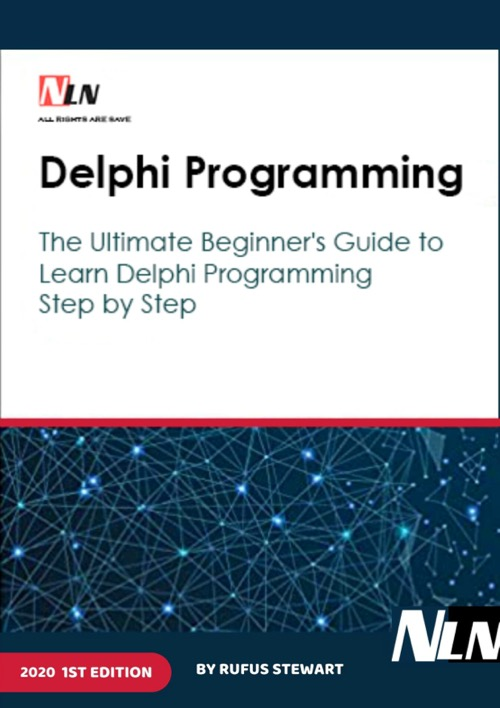

Delphi Programming: The Ultimate Beginner's Guide to Learn Delphi Programming Step by Step
Published by : Amazon
Writed by : Rufus Stewart
Published date : 11/10/2020
Language :  English
English
Web site : https://amzn.to/3jB1f5I
About Delphi Programming: The Ultimate Beginner's Guide to Learn Delphi Programming Step by Step
The development of personal desktop computers led to the introduction of multi-tasking, multi-user operating systems such as Microsoft Windows. However, as a result, the process of creating software has become much more complicated. Visual integrated development environments (IDE) and rapid application development (RAD) systems were created by market leaders to facilitate the interaction with operating systems, reduce coding time, and improve the quality of the code.
Visual Programming is a process of building software applications in which a user can simultaneously design, edit, debug and test the app using Visual IDE. In other words, Visual Programming is a combination of two interconnected processes: designing an application window visually; and writing the code.
Delphi, a powerful Pascal compiler with a number of significant improvements for creating Windows applications, was first released in 1996.
It is a high-level software development system with an integrated tool set for developing complete applications; it is a tool for rapid application development. Visual design and event-based programming concepts are the pillars of Delphi ideology. Using those concepts significantly improves application design processes and greatly reduces development time.
Visual design allows users to lay out the application and see the results of the process prior to even starting the actual program. There are other benefits too: to assign a property value to a control or element of the app, it is not necessary to write multiple lines of code. All it takes is to change that value in a Properties window. This change will automatically generate or update the code.
Where to buy ?
If this book is still available for sale, you probably can order it on its website.
Table of content
INTRODUCTION
SECTION 1. INTRODUCTION TO DELPHI PROGRAMMING .
1.1. Basic concepts of object-oriented programming.
1.2. Delphi Integrated Development Environment : purpose and general description of the environment.
1.3. General program organization in Delphi .
1.4 Some reference information for working in the Delphi environment .
SECTION 2. PRACTICAL WORK IN THE DELPHI ENVIRONMENT. LABORATORY WORK NO. 1 . "Building, Compiling, and Debugging a Simple Application."
LABORATORY WORK NO. 2. "Creating a real division application".
LABORATORY WORK NO. 3. "Acquaintance with the RadioGroup and CheckBox components , processing of strings of type String ".
LABORATORY WORK NO. 4. " Creation and processing of a linear array."
LABORATORY WORK NO. 5. " Using the StringGrid component to represent two-dimensional arrays."
LABORATORY WORK NO. 6. "File processing".
LABORATORY WORK NO. 7. "Creating a simple text application (Multi-window text editor)".